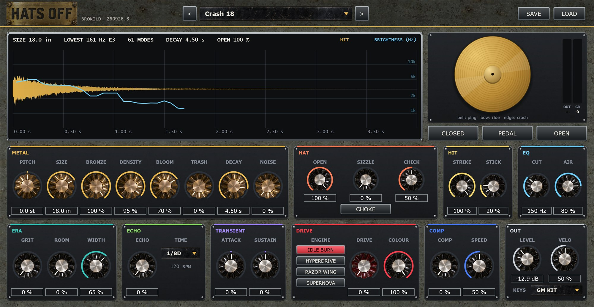
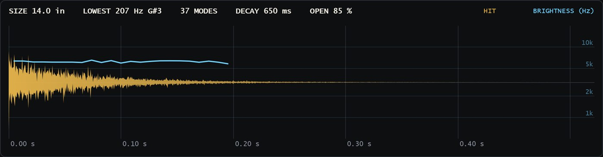
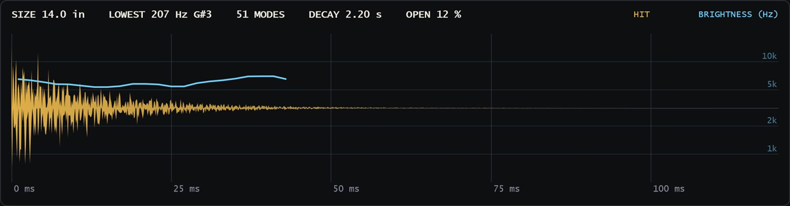
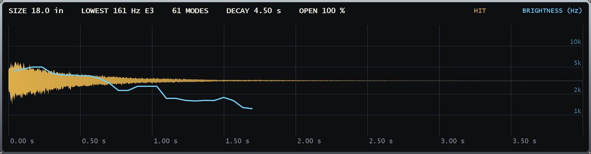
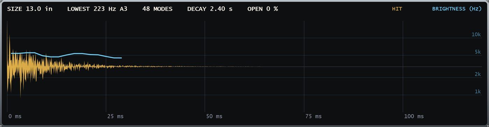
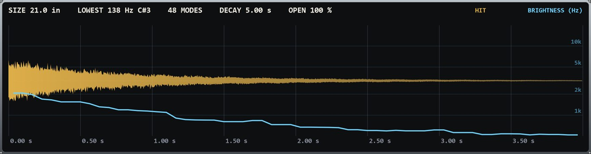
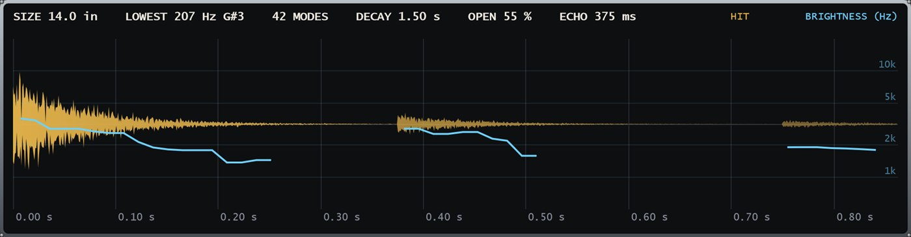
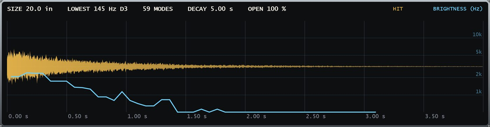
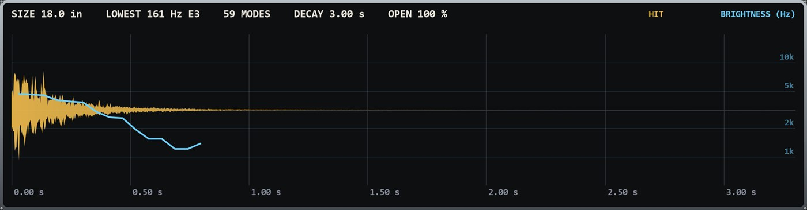

Brokild · Windows VST3 · Hi-hat and cymbal synthesiser
A plate of bronze, two of them on a pedal, and the circuits that copied them. Every hat and cymbal, from those. No samples.
MANUAL · BUILD 260926.3

Contents
Hats Off synthesises hi-hats and cymbals: the real ones in a studio, the drum machines that made the records, and what techno, dub and dubstep did with them next.
It does not carry a simulation per machine. It models what every cymbal is — a plate that rings, closed or free — and the circuit that imitated it, with thirty-one controls, and lets you walk from one to the next.
Open it and click the cymbal in the corner — the bell in the middle, then out towards the edge. Then CLOSED, PEDAL and OPEN. Press > beside the preset name until something makes you grin.
Quick start
Copy Hats Off.vst3 into C:\Program Files\Common Files\VST3\ and rescan. It files under Instrument / Drum. The standalone, Hats Off.exe, needs no installing.
Click the cymbal: the middle is the bell, the rim is the edge. Keys: space as dialled, C closed, P pedal, O open, B bell, E edge.
< and > step through the banks; the name opens the list. Presets are level-matched, so you compare cymbals, not volumes.
With KEYS on GM KIT (the default), 42 is the closed hat, 44 the pedal, 46 the open hat, 53 the bell, and 49, 52, 55 and 57 the edge — the General MIDI drum map, so a drum rack just works.
SAVE and LOAD use Documents\Brokild patches\Hats Off.
The idea
A cymbal is a plate of bronze with a great many modes that do not line up. A drum machine faked that with square waves. Hats Off builds both, and lets one turn into the other.
| What | 808 / 606 | A real cymbal | Hats Off |
|---|---|---|---|
| The tone | six squares, not in tune | a plate’s modes | BRONZE walks between them |
| The top | a band-pass | too dense to hear as notes | DENSITY: modes, then a wash |
| Where it is hit | — | bell, bow, edge | STRIKE |
| The build | — | brighter after the hit | BLOOM |
| Open or closed | two sounds | one pedal | OPEN, CHICK, CHOKE |
| The stick | — | a tick on the ride | STICK |
The plate’s low and middle modes are rung one by one, because that is where a cymbal’s pitch lives: a 14-inch and a 20-inch are different instruments. Above a few kHz a real cymbal’s modes crowd and couple until no ear hears them as notes, so there Hats Off lays a wash of noise bands that obey the same laws — the same decay, the same tilt with the strike, the same damping as the hat closes.



Metal
Moves every mode and every square together, so the cymbal keeps its character and changes its register.
The diameter. The lowest mode falls as the plate grows: a splash is high and quick, a 22-inch ride low and dark. The display names it.
At 0, the 808’s six square waves through a band-pass. At 100, the plate. Between, both — the 909’s trick.
How many modes, from ten to sixty-four, and how much wash above them. Low is a bell-like ping; high is the continuum of a crash.
A struck cymbal gets brighter for a moment after the stick, as the energy climbs into the high modes. BLOOM sets how much and how slowly: the swell of a crash.
The plate rattles against its own lowest modes: a china, an upturned cymbal, a cracked one.
Time for the lowest mode to fall 60 dB with the hat fully open. Higher modes die sooner, as on a real plate.
Plain white noise under the envelope: a CR-78, a 606, or grit for a machine hat.
Hat
Two plates on a pedal. The foot decides how long they ring.
How far apart the plates are. Closed, the upper plate damps the lower and the high modes die first, so a closed hat is short and dark; fully open is a free cymbal ringing for DECAY.
Half-open plates touch and buzz against each other. The rattle follows the plate’s own motion, and it cannot happen when the hat is shut.
The pedal note: the two plates clapped together by the foot, a short, woody chick at about 2.4 kHz.
With CHOKE on, a closed hit stops an open hat ringing — the foot coming down. Off, they overlap like two separate cymbals.
From fully open to fully closed, the time for a hit to fall 40 dB goes from 1339 ms to 38 ms. A closed hit after an open one leaves the open hat 113 dB down 400 ms later with CHOKE, against 28 dB without.
CLOSED clamps OPEN to a few percent; PEDAL is the chick on its own with a little plate; OPEN opens it to at least 80 %. All three from the same patch, so a preset is a whole pair of hats, not one sound.

Hit and EQ
Where the stick lands. On the bell the dome rings: a clear ping that lasts. On the bow, the ride. On the edge the high modes explode: the crash, brighter and shorter.
The tip of the stick on the metal: the tick that defines a ride pattern over the wash.
A high-pass, as every engineer puts on the overheads. At its bottom it is not there at all.
The top octave. Down for a dark, dusty cymbal; fully up is no filter.
Six ways to hit it
| Articulation | GM note | Pad / key | What changes |
|---|---|---|---|
| As dialled | any other | cymbal · space | as the controls say |
| Closed | 42 | CLOSED · C | the hat shut |
| Pedal | 44 | PEDAL · P | the chick, the foot |
| Open | 46 | OPEN · O | at least 80 % open |
| Bell | 53 | middle · B | STRIKE on the bell |
| Edge | 49 52 55 57 | rim · E | STRIKE on the edge |
Measured from bell to edge the brightness (spectral centroid) rises from 4.3 kHz to 8.5 kHz, and the bell rings on for 3.9 s against 2.7 s for the edge.

Era and Echo
Era · the machine, the room, the width
Lower sample rate and bit depth. A little is the 12-bit SP-1200; more is the 909’s six-bit cymbal ROM and the 8-bit Linn.
A room around the cymbal — the overheads rather than the close mic. It sits before the drive and the compressor.
A cymbal is wide: its modes radiate to different sides. WIDTH spreads them across the stereo field and decorrelates the wash. At 0 the cymbal is mono, both sides the same sample for sample.
Echo · the dub
A tape echo, ping-pong: the first repeat on the left, the next on the right. One knob raises the send and the feedback together. Each pass comes back darker and thinner, and saturates, so it can be pushed to the top without running away.
Locked to the host tempo, which is shown beneath it; 120 BPM when the standalone has no host.

Transient and Drive
Transient
More or less of the first milliseconds: the stick.
More or less of the ring: the wash and the room.
A transient shaper usually has to guess from the audio. Hats Off is the synthesiser, so it reads its own envelopes — plate, stick and chick — and the gain it makes cannot ripple.
Drive · four engines from Battlestar Overdrive
| Engine | What it does |
|---|---|
| IDLE BURN | A warm, asymmetric tube. Thickens without shouting. |
| HYPERDRIVE | Harmonic injection: a techno hat that cuts on small speakers. |
| RAZOR WING | Tanh into a hard clip. Hard techno, gabber. |
| SUPERNOVA | Fold, crush and chaos. Industrial sheet metal. |
How hard the engine is pushed. Level-matched by measurement: more drive is more character, not more volume.
The drive’s low-pass. Fully open is no filter at all.
A cymbal is nearly all top end, so the drive runs at eight times the sample rate: its harmonics land above hearing and are filtered away instead of folding back.
Comp and Out
Comp
Threshold and ratio on one knob, with its own make-up, so turning it up makes the cymbal denser, not quieter.
Slow lets the stick through before the compressor grabs the wash. Fast flattens it and brings the ring up to meet the hit — the pumping open hat. It looks 1.5 ms ahead, so even fast it catches the front.
Six cymbals ring at once, and they overlap the way real ones do. A seventh fades the oldest rather than cutting it, so a trap roll or sixteen crashes in a row stay smooth.
Out
Output. A soft ceiling holds everything under 0 dBFS.
How much harder hits are louder and brighter. At 0, every velocity is the same hit, exactly.
FIXED: every note plays the cymbal as dialled. GM KIT: 42 closed, 44 pedal, 46 open, 53 bell, 49 / 52 / 55 / 57 edge. CHROMATIC: the note tunes the cymbal, with F#1 (42) at PITCH — a tuned bell line, or a gong played in the key.
No two hits are the same: each mode’s amplitude moves a little every time, as the stick never lands in the same place twice.
The top of the panel

Rendered by the same engine every time a control moves. OPEN is a hit that stops; DECAY one that does not.
The steel curve is the spectral centroid over time. BLOOM shows as a curve that rises after the stick; a closed hat as one that falls at once.
A cymbal seen from above: click the bell, the bow or the edge. CLOSED, PEDAL and OPEN below it; OUT and GR meters beside.
Walking the space
From one style to another, a few knobs at a time.
Forty-four, plus Init · 1 of 2
Studio Hi-Hat 14A pair of 14-inch hats, mic’d close: closed, pedal and open.
Loose HatThe pedal eased off: the plates touch and sizzle.
Jazz Ride 20 · Sizzle RideA stick over a wash that builds — and one with rivets.
Ride Bell · Dark Ride 22The ping; and a big, dark, dry ride.
Crash 16 · Crash 18Thin and fast; the explosion, then the bloom.
Splash 10 · China 18Short and bright; trashy, upturned, rude.
Hats In A RoomThe hi-hat heard from the overheads.
InitA 14-inch hat, nearly closed: a place to start.
808 Closed · Open · CymbalSix squares and a band-pass; the closed one chokes the open.
909 Closed · Open · Ride · CrashA real cymbal through six bits — the house open hat.
606 HatsSquares and noise, thin and ticking.
CR-78 HatA burst of noise, politely filtered.
LinnDrum · 707 / 727A real hat, 8-bit; the mid-eighties Roland.
SP-1200 Hat12-bit, filtered, pushed.
Kraftwerk MetalA ring-modulated circuit cymbal with an echo.
Techno ClosedCircuit, noise and bronze through HYPERDRIVE.
Rolling Open HatThe off-beat open hat, compressed to roll.
Minimal TickA tiny, wide, dry tick.
Detroit RideA gritty machine ride.
Hard Techno HatRAZOR WING and a compressor.
Warehouse RideA ride in a big concrete room.
Forty-four, plus Init · 2 of 2
Dub Hat EchoA half-open hat into a dotted-eighth tape echo.
Roots Hi-HatA loose real hat with a sixteenth-note echo.
Dub Techno HatDark, open; the echo does the rest.
Skank HatA closed hat with an eighth-note echo.
Space CymbalA crash thrown into the echo and the room.
Dubstep HatTight, bright, compressed, all attack.
Halftime CrashA big crash in a room for the drop.
Trap HatA short hat for rolls; velocity does the rest.
Grime HatA crushed circuit hat.
UKG Shuffle HatA half-open hat for the shuffle.
House Open HatThe open hat on the off-beat.
Lo-Fi HatA hat left in a drawer since 1994.
Metal PlateA 24-inch sheet of trash through SUPERNOVA.
Psytrance HatA bright, wide, half-open hat.
Every preset is levelled by measurement: −17 dB RMS over the first 80 ms, the part of a cymbal the ear judges its loudness by, and no clean preset above −1 dBFS — so flicking through compares cymbals, not volumes. The machine names are in the spirit of the originals; nothing is sampled from them.
The numbers
| Format | Windows VST3, 64-bit, and a standalone application |
| Type | Instrument / Drum. MIDI in, stereo out |
| Sound | Fully synthesised. No samples |
| Controls | 31: Metal, Hat, Hit, EQ, Era, Echo, Transient, Drive, Comp, Out |
| Articulations | As dialled, closed, pedal, open, bell, edge |
| Keys | FIXED, GM KIT (42 / 44 / 46 / 53 / 49), CHROMATIC |
| Polyphony | Six ringing cymbals; the oldest fades |
| The plate | Up to 64 modes and 8 bell partials, plus an 8-band wash |
| Drive engines | IDLE BURN, HYPERDRIVE, RAZOR WING, SUPERNOVA |
| Presets | 44 factory in six banks, plus Init |
| User patches | Documents\Brokild patches\Hats Off |
| Licence | AGPLv3. Source at github.com/peterboggild/BrokildApps |
| Build | 260926.3 |
| Lowest mode against SIZE | within 0.001 cents |
| DECAY against its −60 dB time | within 0.3 % |
| Oversampling | 4x; drive at 8x |
| Aliasing, RAZOR WING at 100 % | −84 dB |
| Open hat after a choke, 400 ms on | −113 dB |
| Echo, 1/8D at 120 BPM | 375 ms, left then right |
| Drive level change | within 1.4 dB |
| Latency at 48 kHz | 103 samples, 2.1 ms |
| CPU, a ride with six ringing | about 11 % of a core |
Latency is reported to the host and compensated. Every number here comes from the bench in the source, which renders real audio and measures it: 53 engine checks, 76 in a plugin host, 12 on the panel.
Credits
This VST comes from the curved mind of Professor Brokild, and was programmed with VScode, ChatGPT and Claude. Use of this is on your own peril. It may generate unique, beautiful, scary or useless sounds for you, and it may crash your DAW project. Have fun, play unsafely, unwisely, and unboringly.
It finishes a trilogy with Kickstart, the kick drum synthesiser, and Snare Tactics, the snare. The demos on the website play all three together.
Cheers, Peter Bøggild, September 2026.
Drum machine names are trademarks of their owners, used only to describe the sound a preset is in the spirit of. Hats Off contains no samples of them.
BROKILD
Free, and free to pass on.
peterboggild.github.io/BrokildApps
BUILD 260926.3 · WINDOWS VST3
